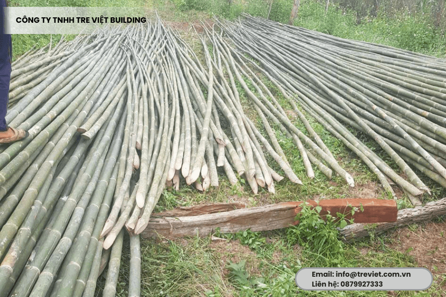
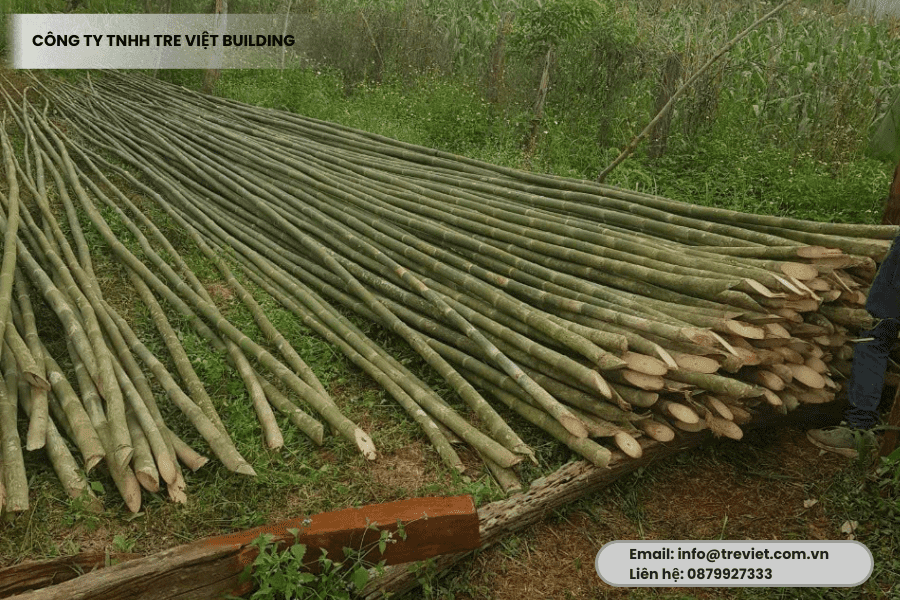
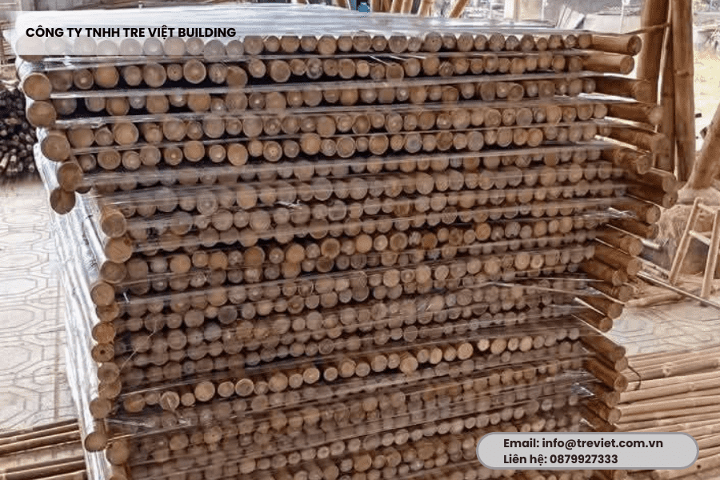
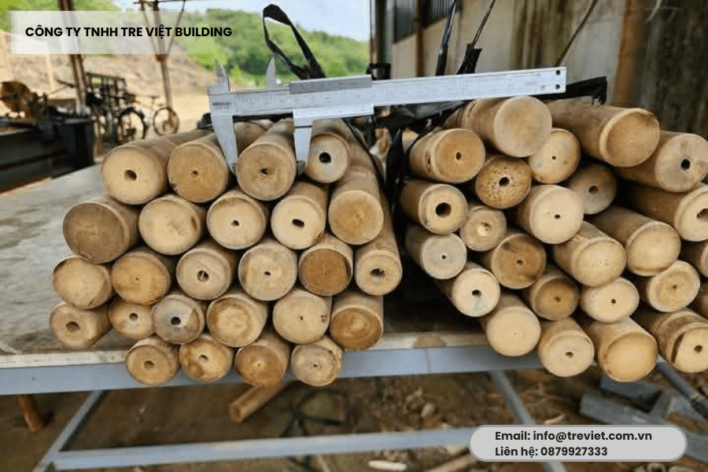
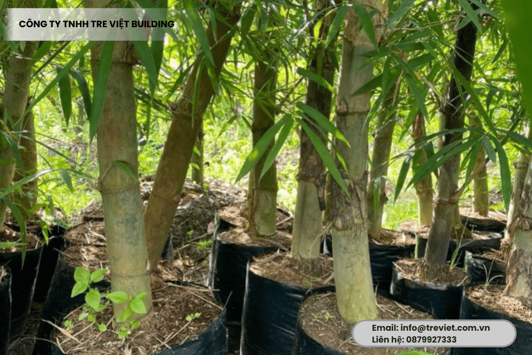

báo giá cây trúc đã xử lý
8.500 ₫












17.000 ₫15.000 ₫
| tre tầm vông | đường kính dao đông từ 3- 7cm độ dài 3-9m tuổi khai thác dảm bảo chất lượng 3-5 năm |
|---|
Cây tầm vông được sử dụng khi thiết kế kiến trúc xanh, vì nguyên liệu tầm vông có giá thành tương đối rẻ, đây cũng là nguyên liệu 100% tự nhiên, an toàn cho sức khỏe người dùng và thân thiện với môi trường. Vậy địa chỉ nào cung cấp cây tầm vông giá rẻ hiện nay? Hãy cùng tìm hiểu ngay sau đây nhé.
Điểm nổi bật của tre tầm vông là cây có độ cứng, độ bền và khả năng chịu lực rất tốt. Cây tầm vông là một trong những nguyên liệu dồi dào và có nhiều trong tự nhiên nên giá thành của tầm vông rất phải chăng và hợp lý.
Vậy nên tre tầm vông được sử dụng rộng rãi trong đời sống hàng ngày điển hình như:
– Đồ thủ công, bàn ghế, thang tre, đồ gia dụng.
– Gỗ tre cũng được sử dụng để trang trí nhà tre, nhà hàng, quán cà phê, khu nghỉ dưỡng…Nó cũng được xuất khẩu sang nhiều nước trên thế giới.
– Dùng cây tre tầm vông để thi công nhà tre, vách ốp, trần nhà bằng măng tre.
– Dùng để làm giàn cho các loại rau leo giàn khác nhau.
Là nguyên liệu chính để sản xuất giấy.
Cây tre tầm vông còn cho ra măng non và dùng để chế biến thành nhiều món ăn ngon cho bữa cơm gia đình.
Hiện tại, tre tầm vông được nhân giống như các cây tre khác. Những giống cây tầm vông được trồng nhiều nhất trong những năm trở lại đây là:
– Cây tre tầm vông 3m: Cây này có độ dài tối thiểu 3m, đường kính gốc 25 đến 35mm.
– Tre tầm vông 4m: Cây dài tối thiểu 4m, và đường kính gốc 35 đến 45mm.
– Cây tre tầm vông 6m: Cây dài tối thiểu 6m, đường kính gốc 40 – 60mm.
– Tre tầm vông 7m: Cây dài tối thiểu 7m, đường kính gốc 49 – 60mm.
– Tre tầm vông 9m: Cây dài tối thiểu là 9m, có đường kính gốc từ 55 đến 65mm.
– Ngọn tầm vông hay còn gọi là Đọt tầm vông: Cây dài tối thiểu 2m -2.5m, đường kính gốc 20 – 25mm.
Tiêu chuẩn khai thác cây tầm vông tại Kỹ Thuật Tre Việt Nam như sau:
– Phân loại nhóm cây: Phân loại theo độ tuổi khai thác và theo phương pháp cây gốc (cây bố mẹ) – cây con.
– Độ tuổi khai thác: Ít nhất là cây được trồng 5 năm (Ngoại trừ những cây cắt tỉa)
– Đường kính gốc : Đường kính gốc cây phổ biến từ 35 – 45mm và 45mm – 65mm.
– Thời điểm khai thác cây: Nên khai thác tập trung vào mùa khô từ tháng 11 năm trước tới tháng 8 năm sau. Cắt tỉa cần được thực hiện điều.
– Cây tre tầm vông thô: Cây sẽ được làm sạch cành, nhánh, mắt, rửa sạch và cắt ngọn – gốc
– Cây tầm vông đã qua xử lý : Được uốn thẳng, cũng như xử lý mối mọt và phơi khô tự nhiên từ 20 – 30 ngày
– Đọt cây tre tầm vông được làm sạch cành và bó thành từng bó khoảng 15 đến 20 cây/bó
Kỹ Thuật Tre Việt Nam nhận gia công cây tre tầm vông theo yêu cầu đặt hàng, tùy theo nhu cầu khách hàng chúng tôi sẽ đáp ứng theo đơn hàng cụ thể như sau:
– Chiều dài kích thước
– Đường kính gốc hoặc đường kính ngọn
– Độ ẩm
– Màu sắc
– Quy cách đóng gói,…
Kích thước cây tầm vông phổ biến hiện nay là:
– Cây tâm vông có chiều dài 4m: Đường kính gốc 35 – 45 mm và 45 – 55 mm
– Cây 3m: Đường kính gốc 28-35mm
– Cây 2.5m: Đường kính gốc 28-35mm
– Cây 2m: Đường kính gốc 28-35mm
Bảng giá cây tầm vông hiện nay giao động khoảng 20.000 VNĐ đến 60.000 VNĐ/ cây.
Giá thành cây tầm vông sẽ khác biệt khi kích thước, độ dài, màu sắc cây tầm vông khác nhau, bảng giá cây tre tầm vông như sau:
| Phân loại cây tầm vông | Đơn giá |
| Tầm vông dài 2m, đường kính từ 2 – 3 cm | Từ 20.000 – 24.000 VNĐ |
| Tầm vông dài 2,5m, đường kính từ 2.5 – 3cm | Từ 20.000 – 25.000 VNĐ |
| Tầm vông dài 3m, đường kính từ 2.5 – 3cm | Từ 25.000 – 30.000 VNĐ |
| Tầm vông dài 4m, đường kính từ 2.5 – 4cm | Từ 40.000 – 60.000 VNĐ |
Để nhận bảng giá cây tre tầm vông chính xác quý khách vui lòng hotline: 0909.86.72.89 để được tư vấn hỗ trợ nhé.
Nếu bạn đang có nhu cầu tìm mua cây tầm vông với số lượng lớn, thì hãy đến ngay Kỹ Thuật Tre Việt Nam bởi chúng tôi có những ưu điểm sau:
Quy mô Kỹ Thuật Tre Việt Nam cụ thể như sau:
Tre Việt là một trong những địa chỉ nổi tiếng tại TP.HCM nơi bạn có thể mua cây tầm vông giá rẻ. Chúng tôi chuyên cung cấp các loại cây tre tầm vông tươi và khô.
Nguyên liệu chúng tôi cung cấp là nguyên liệu đã xử lý, cam kết chất lượng sản phẩm. Hiện công ty chúng tôi có trụ sở tại một số tỉnh thành như TP.HCM, Bình Dương, Đồng Nai, Long An và nhiều tỉnh thành khác.
Vì giàu tài nguyên rừng trồng, vậy nên Tre Việt là một trong những nhà phân phối hàng đầu chuyên mua bán cây tre tầm vông ở khắp tỉnh miền Nam. Đấy cũng là lý do khiến giá bán cây tầm vông của chúng tôi cũng thấp hơn so với mặt bằng chung của thị trường.
Ngoài ra chúng tôi còn cung cấp nhiều nguyên liệu như tre lồ ô, tre gai, tre trúc…Quý khách có nhu cầu hãy liên hệ ngay thông tin dưới đây để được hỗ trợ.
Công Ty TNHH Tre Việt Building
8.500 ₫

Cây tre luồng được xem là loại vật liệu xanh thân thiện với môi trường, đang được ứng dụng phổ biến trong nhiều công trình xây dựng hiện nay.
30.000 ₫28.500 ₫

Tre Việt Building đơn vị tiên phong đưa vật liệu chống nóng bằng sản phẩm tự nhiên vào thiết kế của mình, trong đó thi công lợp mái lá (lợp guộc) hiệu quả cao.
800.000 ₫650.000 ₫